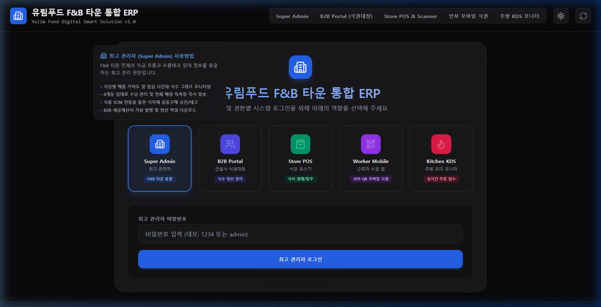
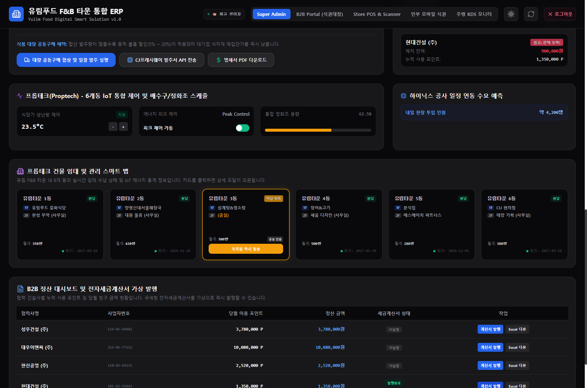
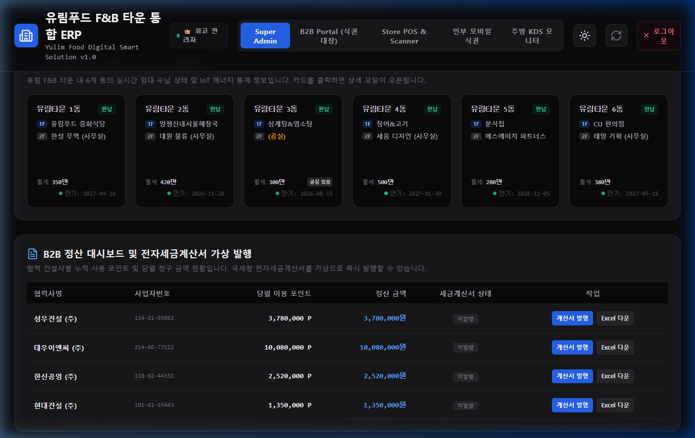
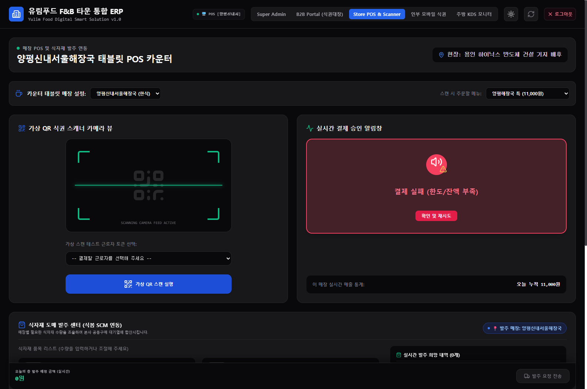
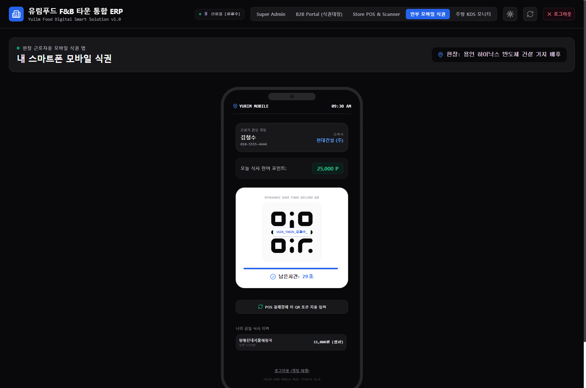
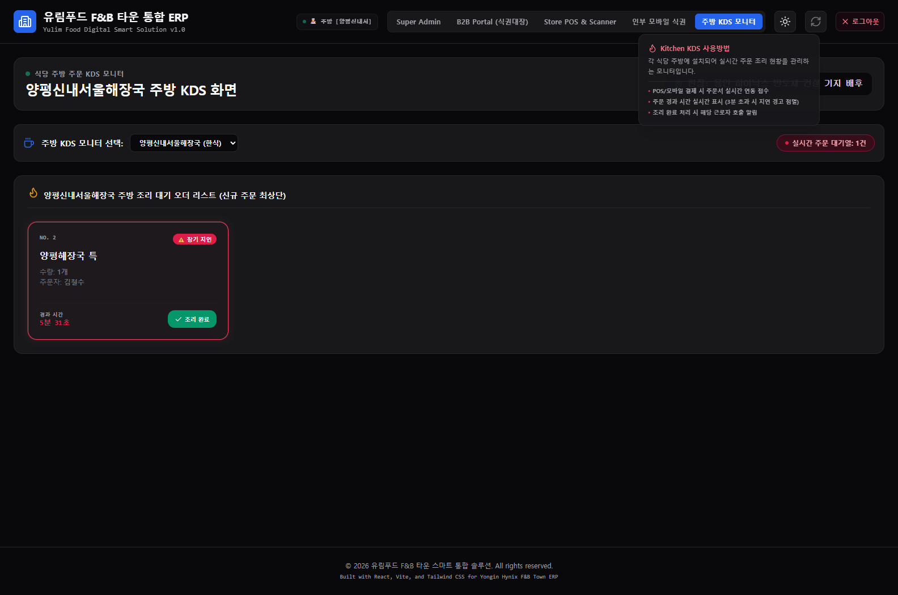

유림푸드 F&B 타운
통합관리시스템(ERP) 도입 보고
종이 식권 정산의 비효율을 100% 디지털 포인트화로 극복하고, 공동구매를 통한 원가 절감 및 프롭테크 기반 임대 관리를 연동한 스마트 타운 통합 솔루션입니다.
애매한 1/2/3식 형태를 탈피, 원화 금액과 1:1 매칭되는 선불 포인트 도입으로 식자재 원가 정밀화 및 가상계좌 즉시 충전 구현
최고 관리자가 매출 기여도 및 동별 인건비 효율, 미납 매장 독촉장 송부와 공실 모집을 실시간으로 관리하는 프롭테크 연동
각 식당의 발주 목록을 하나로 모아 본사 차원에서 도매 단가 대량 할인을 협상(네고)하여 점주 원가 절감 지원
종이 식권의 한계 극복 및
타운 스마트 관리 체계 수립
하이닉스 반도체 건설 현장 배후에 위치한 유림 F&B 타운은 수백 명의 근로자가 매일 이용하는 핵심 상권입니다. 기존 수작업 정산 방식의 한계를 디지털로 해결합니다.
구식 장부/종이 식권의 정산 한계
식사 이용 내역 수기 취합으로 월말 정산에 막대한 행정 공수 소요. 메뉴별 단가 상이로 정산 분쟁 발생.
디지털 통합 플랫폼 도입 성과
1포인트=1원 기반의 전자 식권 배포. 본사-대리점-근로자가 동일한 데이터를 실시간으로 모니터링하여 투명성 100% 확보.

5대 사용자 그룹이 연동되는
유기적 디지털 에코시스템
유림푸드 ERP는 단순한 단독 프로그램이 아닌, 현장의 모든 이해관계자를 유기적으로 묶어 데이터 사각지대를 완전히 없애는 스마트 허브 구조입니다.
본사 경영 효율화를 위한
최고 관리자 메인 대시보드
4대 KPI 요약 카드를 바탕으로 한 프롭테크 임대관리 및 인건비 제어 기능입니다. 클릭 한 번으로 세부 내역이 펼쳐지는 **탑다운 드릴다운** 방식을 채택했습니다.
입점 식당별 금일 누적 매출 및 결제 트랙션 5개 실시간 조회
협력업체별 선불 예치금 잔액 모니터링 및 공동구매 대량 네고 승인
유림타운 상동 임대 수납 관리. 미납 매장 대상 즉시 독촉장 전송 및 공실 모집 상태 제어

B2B 협력 건설업체 포털:
선불 예치금 및 근로자 관리
협력 건설업체(예: 현대건설) 담당자가 로그인하여 직접 소속 근로자 식권 포인트를 관리하고 장부를 검수하는 화면입니다.

입점 매장 POS 결제 및
실시간 식자재 발주 연동
식당 카운터에서 직관적으로 결제를 처리하고 필요한 자재를 실시간으로 주문하는 식당 점주용 기능입니다.

스마트폰 모바일 식권:
근로자를 위한 신속 결제 QR
별도의 카드 발급 비용 없이 개인 스마트폰의 브라우저를 통해 실시간 식권을 생성하는 모바일 웹앱입니다.

주방 KDS 모니터:
실시간 주문 접수 및 조리 관리
카운터 결제와 동시에 주방용 터치 모니터에 자동 접수되어 종이 주문서 없이 빠르게 조리 및 서빙을 돕는 주방 도구입니다.

유림푸드 F&B 타운 ERP 도입 기대 효과
시스템 전면 도입 후 수치로 검증될 예정인 정산 가속화 및 F&B 타운 입점 점주님들의 원가 절감 효과입니다.
매달 종이 장부를 대조하고 수작업으로 청구하던 시간이 실시간 B2B 결제 포인트 정산 시스템으로 자동화되어 업무 극대화
식봄 SCM 연동을 통한 식당 통합 발주로 대량 할인 네고 조건을 달성하여 식자재 단가를 파격적으로 인하
피크 시간대 매장별 근무 인력을 AI 및 최고 관리자가 분석하여 한가한 매장에서 바쁜 매장으로 즉각 교차 배치 지원
월세 미납 매장에 대해 버튼 클릭 한 번으로 모바일 독촉장을 송부하고 공실은 즉각 마케팅 상태로 전환하여 관리 사각 차단
대표님께 드리는 코다리 개발부장의 총평:
"불필요한 IoT 센서 연동처럼 시스템 관리 부담만 늘리는 장치들은 제외하고, 1원 단위 B2B 정산 포인트화와 대량 공동구매 원가 절감 같은 '진짜 돈이 되는' 핵심 비즈니스 로직에 집중하여 완성도를 극대화했습니다. 총괄사장 함용운 선배님께서도 분명 기뻐하시고 만족하실 핵심 기능들입니다!"